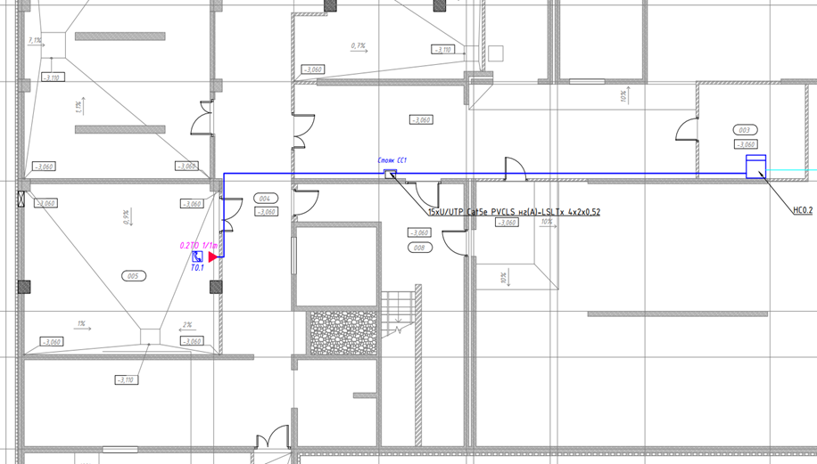
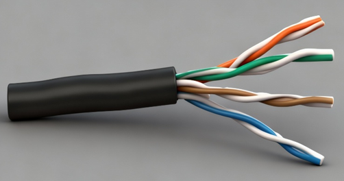
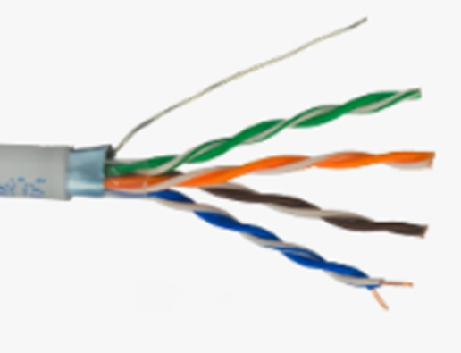
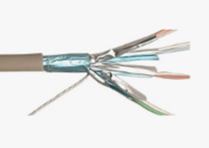
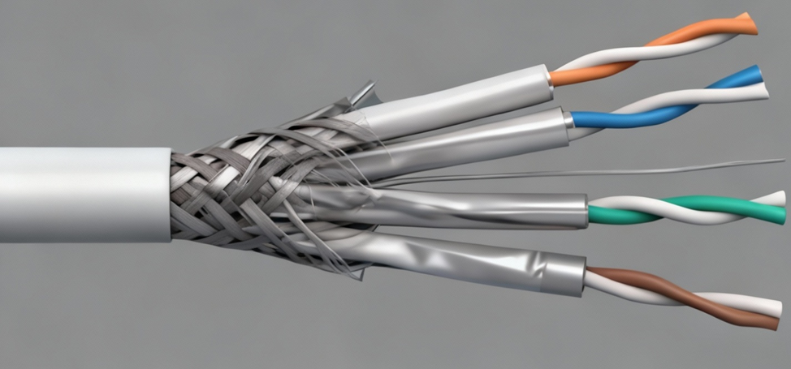

Проектирование слаботочных сетей как инженерная задача

Некорректная прокладка кабеля - это системная ошибка, приводящая к гарантированным проблемам: помехи в видеонаблюдении, ложные срабатывания пожарной сигнализации, потеря пакетов в сети, дорогостоящий ремонт.
Ваша главная задача как проектировщика - заложить в чертежи решение, которое:
- Работает надежно (обеспечивает стабильную передачу сигнала, данных, питания).
- Соответствует нормам (ГОСТ, СП, правила пожарной безопасности).
- Может быть реализовано (учтены габариты конструкций, доступ для монтажа и обслуживания).
- Экономически оправдано (оптимальная длина, минимизация рисков).
Состав слаботочных систем и основные термины
К слаботочным (информационно-коммуникационным) системам относятся:
- Сети связи: Структурированные кабельные системы (СКС), локальные вычислительные сети (ЛВС), телефония.
- Системы безопасности: Охранно-пожарная сигнализация (ОПС), автоматическая пожарная сигнализация (АПС), система оповещения и управления эвакуацией (СОУЭ), контроль доступа (СКУД), видеонаблюдение (CCTV).
- Прочие системы: Сети телевидения (КТВ, IPTV), часофикация, радиофикация.
Линия (шлейф) - это физический путь от управляющего устройства (контроллера, коммутатора, прибора) до конечного оборудования (датчика, камеры, громкоговорителя, розетки).
Ключевые нормативные документы
Ваша работа должна опираться на действующие своды правил (СП) и национальные стандарты (ГОСТ Р). Основные:
- СП 134.13330.2022: Системы электросвязи зданий и сооружений. Основные положения проектирования. Это главный документ по проектированию систем электросвязи в зданиях и сооружениях.
- ГОСТ Р 56555-2015. Национальный стандарт Российской Федерации. Слаботочные системы. Кабельные системы. Кабелепроводы и помещения (магистрали и промежутки для прокладки кабелей в помещениях пользователей телекоммуникационных систем).
- ГОСТ Р 53246-2008: Информационные технологии. Системы кабельные структурированные. Проектирование основных узлов системы. Общие требования.
- СП 6.13130.2020: Системы противопожарной защиты. Электрооборудование. Требования пожарной безопасности. Категорически важен для АПС, СОУЭ, СКУД (определяет типы допустимых кабелей, способы прокладки).
Нормативные документы регулярно обновляются. Перед началом проектирования проверяйте актуальность редакций документов в официальных источниках.
Требования к трассировке кабельных линий
Трассировка - это настоящее искусство прокладки оптимального маршрута кабельных линий. Рассмотрим какие аспекты необходимо соблюдать при прокладке слаботочных кабелей.
Общие правила и зоны прокладки
Разделение с силовыми сетями: Главное правило. Силовые кабели (220/380 В) создают мощное электромагнитное поле, которое наводит помехи в слаботочных линиях.
- Минимальное расстояние параллельной прокладки: 150 мм (по СП 134.13330.2022).
- Минимальная высота лотка 50 мм, рекомендуемая высота 100 мм;
- Минимальный допустимый размер кабельного лотка зависит от размеров кабельной шахты. В кабельную шахту глубиной от 450 до 600 мм устанавливают кабельные лотки шириной не менее 200 мм (рекомендуемая ширина кабельного лотка - 300 мм). В кабельную шахту глубиной 600 мм и более устанавливают кабельные лотки шириной не менее 300 мм (рекомендуемая ширина кабельного лотка - 400 мм).
- Кабели различного назначения (например, силовые кабели и кабели передачи информации) не должны находиться в одном пучке. Пучки кабелей различного назначения должны быть отделены друг от друга в отношении электромагнитных воздействий.
- В лотках и коробах: Допускается совместная прокладка разных слаботочных систем в коробе или на лотке кабелей различного функционального назначения их следует разделять перегородкой или разносить по разным сторонам с учетом требований ГОСТ Р 50571-4-44.

Практические рекомендации по проектированию трассы
Изучите смежные разделы: Получите у архитекторов и инженеров ОВиК, ЭОМ, ВК планы с расположением воздуховодов, трубопроводов, силовых щитов и магистралей и подгрузите их в своей модели Revit. Также для удобства быстрого поиска пересечений используйте Navisworks. Ваша трасса не должна пересекать другие системы.
Используйте существующие строительные пути: Кабельные стояки, межпотолочное пространство, фальш-полы, технические коридоры.
Предусматривайте запас: На чертежах и в натуре оставляйте запас кабеля в точках коммутации (розетка, коробка, щит) не менее 0.5-1 метра для повторного оконцевания.
Избегайте «опасных» зон: Не прокладывайте трассы в непосредственной близости от:
- Силовых трансформаторов, мощных электродвигателей, частотных преобразователей.
- Лифтовых шахт.
- Радиопередающего оборудования.
Крепление: Указывайте в проекте тип крепежа (стойки, лотки, клипсы, дюбель-хомуты) с шагом не более 0.5-0.7 м для горизонтальной и 1 м для вертикальной прокладки.
Требования к длине линий кабельных линий
Превышение максимальной длины - самая частая причина неработоспособности системы. Рассмотрим подробнее какие есть ограничения длины кабелей.
Физическая природа ограничений
С увеличением длины кабельной линии:
- Увеличивается затухание (ослабление) сигнала (для аналогового видео, аудио, цифровых протоколов).
- Растет сопротивление жил, что приводит к падению напряжения (критично для систем, передающих питание по тому же кабелю, что и данные: PoE для камер и точек доступа, питание датчиков АПС).
- Увеличивается задержка распространения сигнала (может быть критично для некоторых протоколов в АСУТП).
Практические ограничения для основных систем
Сейчас мы рассмотрим особенности, которые связаны с передачей сигнала на расстояния для разных систем, смотрите их в презентации.
- СКС и ЛВС (Ethernet на витой паре): 100 метров – максимальное расстояние. Это предельное расстояние от активного оборудования (коммутатора) до сетевой розетки, гарантирующее соответствие стандартам скорости (100 Мбит/с). При использовании более высоких стандартов, расстояние может быть уменьшено до 55 метров.
- Видеонаблюдение:
- По витой паре (с передатчиками): рекомендуемое расстояние до 1000-1500 м для аналога (HD-CVI/TVI), до 100 м для IP.
- По коаксиальному кабелю: до 500 м для аналогового сигнала стандартного разрешения.
- Системы на базе протокола RS-485 (АПС, СКУД, диспетчеризация): рекомендуемое расстояние до 1200 метров на одной линии (шинной топологии). Использование качественного кабеля и правильное согласование терминаторов обязательно.
- Аналоговые аудиолинии (СОУЭ, фоника): Могут достигать сотен метров, но требуют расчета сечения жилы для минимизации потерь мощности.
- Питание постоянным током (PoE, датчики): Требует расчета падения напряжения. Используйте онлайн-калькуляторы, учитывая ток потребления устройства, напряжение источника и сечение жилы кабеля. Часто ограничивающий фактор - не данные, а питание.
Совет опытного проектировщика: Всегда стремитесь минимизировать длину линии. Но не используйте максимальную длину «впритык», оставляйте запас 10-15%.
Экранирование. Что это и когда оно нужно
Экранирование - это защита внутренних проводников кабеля от внешних электромагнитных помех (EMI) и предотвращение излучения собственных сигналов вовне.
Экранирование проводников кабеля помогает улучшить защиту от электромагнитного излучения, создаваемого носителями сигналов, и невосприимчивость к воздействию электромагнитных помех от внешних источников. Способность экрана создавать определенные преимущества для кабельной системы зависит от множества факторов.
Особенностью экранированных кабелей является добавление к конструкции неэкранированного кабеля гальванически непрерывного экрана, расположенного вокруг четырех пар под общей оболочкой.
- Неэкранированная витая пара (UTP): Самый распространенный и дешевый тип. Подходит для большинства офисных сред.

- Экранированная витая пара:
- FTP (Foiled Twisted Pair): Общий фольгированный экран вокруг всех пар.

- STP (Shielded Twisted Pair): Фольгированный экран вокруг каждой пары и общий фольгированный экран.

- S/FTP (Shielded Foiled TP): Фольга вокруг каждой пары + общая оплетка. Максимальная защита.

Когда экранирование обязательно
- Прокладка в зонах с высокой электромагнитной активностью: Производственные цеха с мощным оборудованием, медицинские учреждения (рентген, МРТ), котельные, трансформаторные подстанции.
- Внешняя прокладка (по фасаду, между зданиями): Кабель подвержен атмосферным электрическим разрядам и наводкам. Используйте экранированный кабель для наружной прокладки (с гидрофобным заполнением и броней при необходимости).
- Требования стандарта или заказчика: При работе на объектах с повышенными требованиями к информационной безопасности или устойчивости (банки, правительственные учреждения).
Экран без правильного заземления - это антенна, которая только ухудшит ситуацию
Экран должен быть непрерывным во всех компонентах кабельных подсистем в моделях линий и каналов.
Заземление выполняется только с одной стороны линии (обычно на стороне активного оборудования/коммутационного шкафа), чтобы не образовывать «заземляющие петли», которые сами являются источником помех. Используйте экранированные соединительные компоненты (розетки, патч-панели) и экранированные патч-корды.
Чек-лист для инженера
Перед сдачей чертежей на проверку ответьте на вопросы:
- Трассировка: Соблюдено минимальное расстояние (150 мм) от силовых кабелей. Кабели различного назначения проложены раздельно. Учтены строительные конструкции и смежные системы.
- Длина: Проверьте длину кабельной линии, как хорошо будет доходить сигнал
- Экранирование: Проверьте есть ли на объекте источники сильных помех и нужен ли экранированный кабель. Прописано ли в проекте заземление экрана с одной стороны и использование экранированных компонентов.
- Нормативная база: Использованы актуальные редакции нормативных документов. Учтены требования пожарной безопасности к типам кабелей.